Media Recommendations
Some things I enjoy. Go check them out if they look cool. Or don't.
/Movies/
| 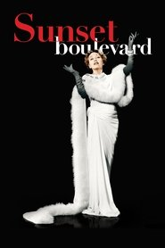 | sunset boulevardDreamlike dark comedy about an aspiring screenwriter who gets mixed up with a narcissistic actress who won't let go of the past. A very sharp and witty commentary on Hollywood, and has some very beautiful cinematography as well. |
| 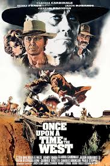 | once upon a time in the westThe Good the Bad and the Ugly is arguably Sergio Leone's most famous western, which is a shame because it overshadows this masterpiece, which is every bit as memorable. Much more epic in scale than his other westerns, with a lot more characters and plot threads. Soundtrack is also impeccable, Ennio Morricone was on something else here man. |
 |
the grand budapest hotelMaybe the most rewatchable movie ever. Love that Willem Dafoe gets his very own custom Prada villain jacket. |
/Books/
 |
the westing game
|
| 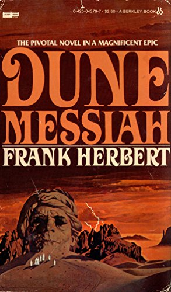 | dune messiah
|
 |
the man who was thursday
|
/Music/
| 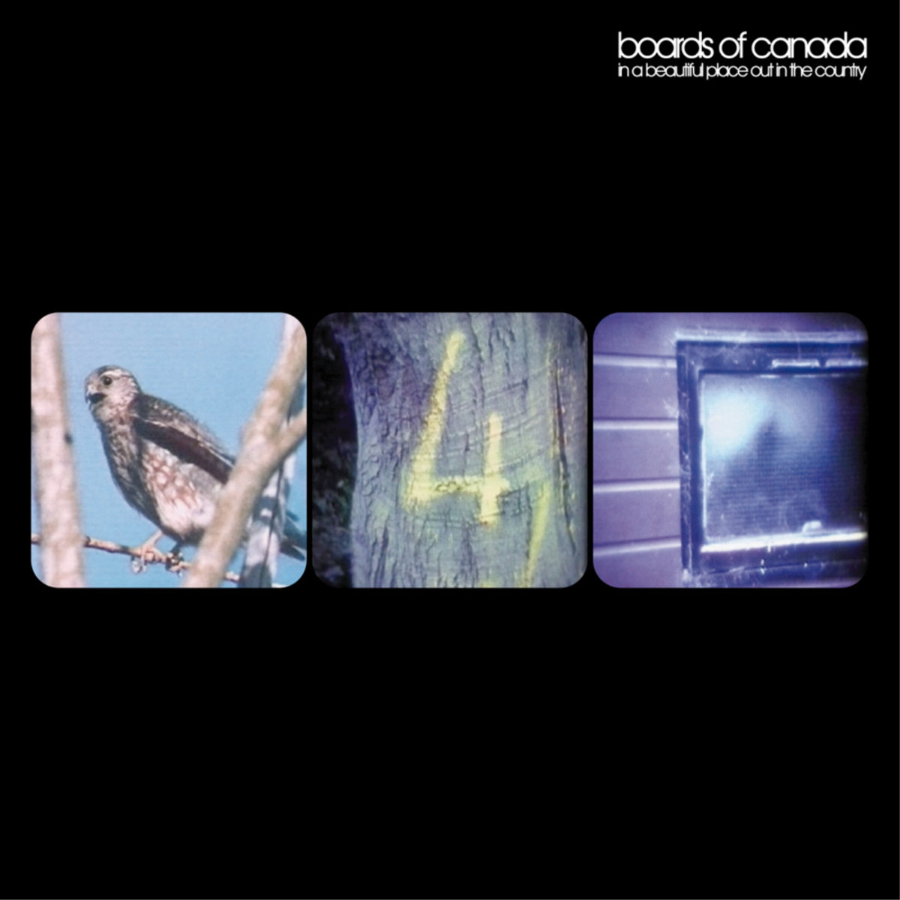 | a beautiful place out in the country
|
| 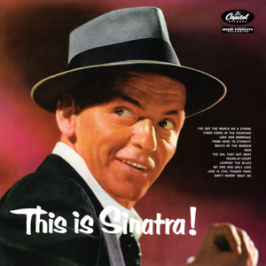 | this is sinatra
|
| 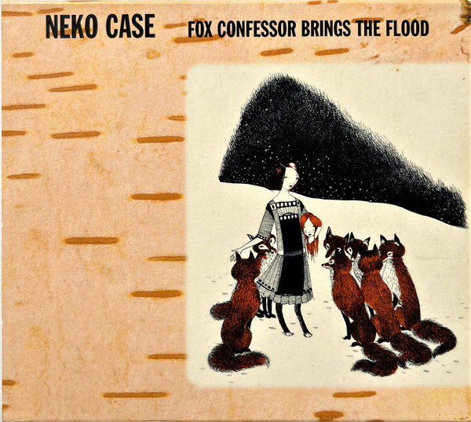 | fox confessor brings the flood
|
| 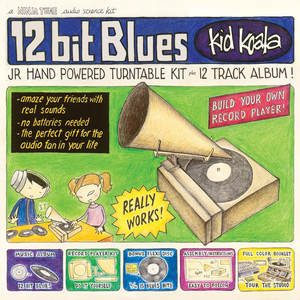 | 12 bit blues
|
| 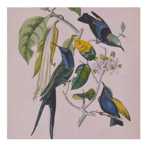 | sakura
|
| 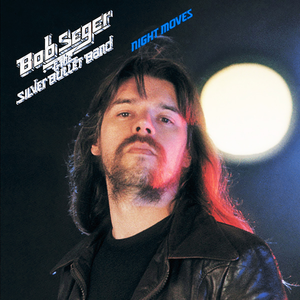 | night moves
|
/Games/
| 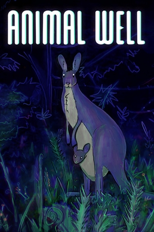 | animal wellA surreal retro platformer, inspired by NES and C64 games. Big focus on atmosphere and engaging moment-to-moment gameplay. The save room music sounds like Laura Palmer's Theme. |
 |
outer wildsEasily my favorite piece of Science Fiction, perfectly mixing abstract sci-fi concepts with some more human and emotional themes that hit hard. Also the best DLC of any game I've played. Solanum is my favorite traveler. |
 |
sableAtmospheric coming-of-age story inspired by Nausicaa and the works of Moebies. The highlight is definitely the art direction, with stenciled outlines and bold colors that change hue depending on the time of day. Japanese Breakfast composed the soundtrack, which is well worth listening to even if you have no intention of playing the game. |
| 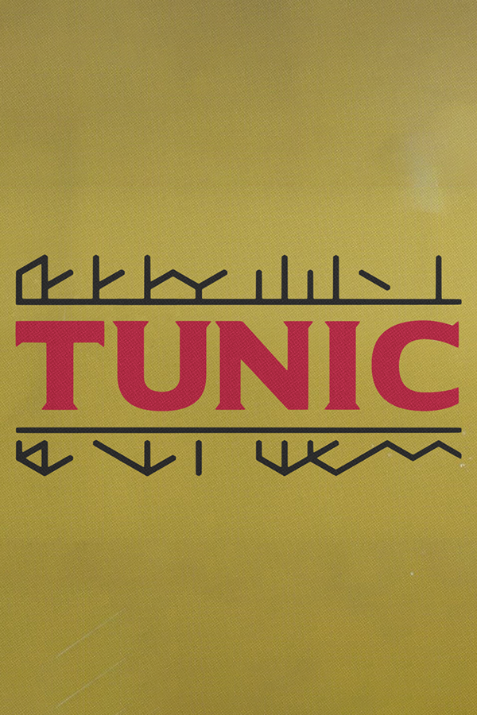 | tunicThe best "video-gamey" video game ever produced and a love letter to old-school Zelda. The puzzles required for the true ending are absolutely insane and make use of the established mechanics in a brilliant way. The music is also a refreshing genre change for this kind of game, with some house-inspired bangers. |